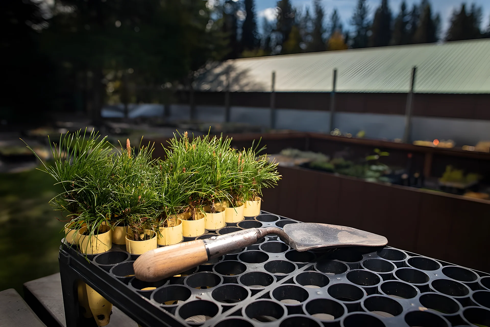

Segurança em primeiro lugar
Cultura de prevenção, uso correto de EPIs e equipes treinadas em todas as frentes.
Comprometidos com a excelência em silvicultura e no manejo sustentável de florestas.
Cultura de prevenção, uso correto de EPIs e equipes treinadas em todas as frentes.
Padrões técnicos e acompanhamento em cada operação.
Pessoas, máquinas e planejamento integrados para entregar mais, com responsabilidade.
A ciência e a prática de implantar, conduzir e manejar florestas plantadas de forma produtiva e sustentável, do viveiro à colheita.

 Assistir no site
Assistir no site
Entenda por que o eucalipto é uma das culturas florestais mais importantes do Brasil e como o manejo correto transforma mudas em florestas produtivas.
Manejo responsável, conservação do solo e da água e respeito às áreas de preservação em cada operação.
Equipamentos modernos, acompanhamento de indicadores e planejamento orientado por dados para operar com precisão.
Equipes treinadas, uso correto de EPIs e cultura de segurança: todos voltam para casa bem, todos os dias.
Equipe e frota preparadas para cada etapa da operação.
Quem lidera cada frente da operação na Unidade São Miguel. Passe o mouse ou toque em um card para ver os detalhes.
Previsão de cada fazenda e a janela de aplicação hora a hora: verde é hora boa para pulverizar, amarelo pede atenção e vermelho é para não aplicar.